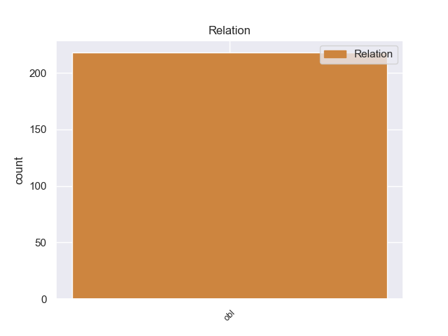
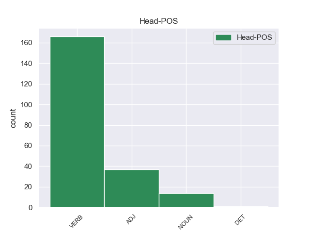
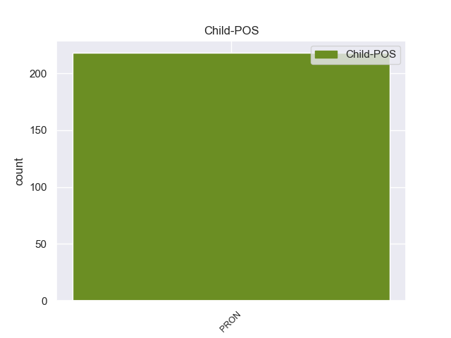

Distribution of features within this leaf



Agreement Rules sorted by frequency.
- When the dependent token is the oblique nominal(obl) of the head token, and the head token is VERB and the dependent token is PRON.
1 मुख्य _ _ _ _ 0 _ _ _
2 सचिव _ _ _ _ 0 _ _ _
3 ने _ _ _ _ 0 _ _ _
4 बताया _ _ _ _ 0 _ _ _
5 कि _ _ _ _ 0 _ _ _
6 फंसे _ _ _ _ 0 _ _ _
7 यात्रियों _ _ _ _ 0 _ _ _
8 को _ _ _ _ 0 _ _ _
9 वहाँ वहाँ PRON PRP Case=Acc|PronType=Prs 11 obl _ ChunkId=NP3|ChunkType=head|Translit=vahām̃|Vib=0_से
10 से _ _ _ _ 0 _ _ _
11 निकालने निकाल VERB VM Case=Acc|Number=Plur|VerbForm=Inf 0 _ _ _
12 के _ _ _ _ 0 _ _ _
13 प्रयास _ _ _ _ 0 _ _ _
14 किए _ _ _ _ 0 _ _ _
15 जा _ _ _ _ 0 _ _ _
16 रहे _ _ _ _ 0 _ _ _
17 हैं _ _ _ _ 0 _ _ _
18 । _ _ _ _ 0 _ _ _
1 मित्तल _ _ _ _ 0 _ _ _
2 स्टील _ _ _ _ 0 _ _ _
3 की _ _ _ _ 0 _ _ _
4 एक _ _ _ _ 0 _ _ _
5 प्रवक्ता _ _ _ _ 0 _ _ _
6 ने _ _ _ _ 0 _ _ _
7 बताया _ _ _ _ 0 _ _ _
8 कि _ _ _ _ 0 _ _ _
9 लक्ष्मी _ _ _ _ 0 _ _ _
10 मित्तल _ _ _ _ 0 _ _ _
11 के _ _ _ _ 0 _ _ _
12 खिलाफ़ _ _ _ _ 0 _ _ _
13 फिलहाल _ _ _ _ 0 _ _ _
14 कोई कोई PRON PRP Case=Nom|Number=Sing|Person=3|PronType=Prs 16 obl _ ChunkId=NP4|ChunkType=child|Tam=0|Translit=koī|Vib=0
15 अदालती _ _ _ _ 0 _ _ _
16 मामला मामला NOUN NN Case=Nom|Gender=Masc|Number=Sing|Person=3 0 _ _ _
17 नहीं _ _ _ _ 0 _ _ _
18 है _ _ _ _ 0 _ _ _
19 । _ _ _ _ 0 _ _ _
1 लेकिन _ _ _ _ 0 _ _ _
2 वहां वहाँ PRON PRP Case=Nom|PronType=Prs 3 obl _ ChunkId=NP|ChunkType=head|Translit=vahāṁ
3 मौजूद मौजूद ADJ JJ Case=Nom 0 _ _ _
4 लोग _ _ _ _ 0 _ _ _
5 इस _ _ _ _ 0 _ _ _
6 दौरान _ _ _ _ 0 _ _ _
7 उनके _ _ _ _ 0 _ _ _
8 मुंह _ _ _ _ 0 _ _ _
9 से _ _ _ _ 0 _ _ _
10 क्षेत्र _ _ _ _ 0 _ _ _
11 के _ _ _ _ 0 _ _ _
12 विकास _ _ _ _ 0 _ _ _
13 की _ _ _ _ 0 _ _ _
14 योजनाओं _ _ _ _ 0 _ _ _
15 की _ _ _ _ 0 _ _ _
16 घोषणा _ _ _ _ 0 _ _ _
17 की _ _ _ _ 0 _ _ _
18 आस _ _ _ _ 0 _ _ _
19 लगाए _ _ _ _ 0 _ _ _
20 बैठे _ _ _ _ 0 _ _ _
21 थे _ _ _ _ 0 _ _ _
22 । _ _ _ _ 0 _ _ _
Disagree Examples:
1 यहाँ यहाँ PRON PRP Case=Nom|PronType=Prs 2 obl _ ChunkId=NP|ChunkType=head|Translit=yahām̃
2 लगने लग VERB VM Case=Acc|Number=Sing|VerbForm=Inf 0 _ _ _
3 वाला _ _ _ _ 0 _ _ _
4 तीन _ _ _ _ 0 _ _ _
5 दिन _ _ _ _ 0 _ _ _
6 का _ _ _ _ 0 _ _ _
7 इज्तिमा _ _ _ _ 0 _ _ _
8 पूरे _ _ _ _ 0 _ _ _
9 देश _ _ _ _ 0 _ _ _
10 के _ _ _ _ 0 _ _ _
11 लोगों _ _ _ _ 0 _ _ _
12 को _ _ _ _ 0 _ _ _
13 आमंत्रित _ _ _ _ 0 _ _ _
14 करता _ _ _ _ 0 _ _ _
15 है _ _ _ _ 0 _ _ _
16 । _ _ _ _ 0 _ _ _
1 बलुआ _ _ _ _ 0 _ _ _
2 पत्थरों _ _ _ _ 0 _ _ _
3 में _ _ _ _ 0 _ _ _
4 नक्काशी _ _ _ _ 0 _ _ _
5 का _ _ _ _ 0 _ _ _
6 नायाब _ _ _ _ 0 _ _ _
7 नमूना _ _ _ _ 0 _ _ _
8 यहाँ यहाँ PRON PRP Case=Nom|PronType=Prs 9 obl _ ChunkId=NP4|ChunkType=head|Translit=yahām̃
9 देखने देख VERB VM Case=Acc|VerbForm=Inf 0 _ _ _
10 को _ _ _ _ 0 _ _ _
11 मिलता _ _ _ _ 0 _ _ _
12 है _ _ _ _ 0 _ _ _
13 . _ _ _ _ 0 _ _ _
1 यहाँ _ _ _ _ 0 _ _ _
2 शिवजी _ _ _ _ 0 _ _ _
3 का _ _ _ _ 0 _ _ _
4 मंदिर _ _ _ _ 0 _ _ _
5 है _ _ _ _ 0 _ _ _
6 जिसमें जो PRON PRP Case=Acc,Ine|Number=Sing|Person=3|PronType=Prs 7 obl _ ChunkId=NP4|ChunkType=head|Tam=meM|Translit=jisameṁ|Vib=में
7 जाने जा VERB VM Case=Acc|VerbForm=Inf 0 _ _ _
8 के _ _ _ _ 0 _ _ _
9 लिए _ _ _ _ 0 _ _ _
10 अंदर _ _ _ _ 0 _ _ _
11 सीढ़ी _ _ _ _ 0 _ _ _
12 उतरकर _ _ _ _ 0 _ _ _
13 जाना _ _ _ _ 0 _ _ _
14 पड़ता _ _ _ _ 0 _ _ _
15 है _ _ _ _ 0 _ _ _
16 । _ _ _ _ 0 _ _ _
1 लोहानी _ _ _ _ 0 _ _ _
2 गुफाएँ _ _ _ _ 0 _ _ _
3 और _ _ _ _ 0 _ _ _
4 उनके वह PRON PRP Case=Acc,Gen|Number=Plur|Person=3|Poss=Yes|PronType=Prs 6 obl _ ChunkId=NP2|ChunkType=head|Tam=ke|Translit=unake|Vib=0_सामने
5 सामने _ _ _ _ 0 _ _ _
6 स्थित स्थित ADJ JJ Case=Nom 0 _ _ _
7 सनसेट _ _ _ _ 0 _ _ _
8 पॉइंट _ _ _ _ 0 _ _ _
9 भी _ _ _ _ 0 _ _ _
10 पर्यटकों _ _ _ _ 0 _ _ _
11 को _ _ _ _ 0 _ _ _
12 खींचता _ _ _ _ 0 _ _ _
13 है _ _ _ _ 0 _ _ _
14 । _ _ _ _ 0 _ _ _
1 जुलाई _ _ _ _ 0 _ _ _
2 से _ _ _ _ 0 _ _ _
3 लेकर _ _ _ _ 0 _ _ _
4 मार्च _ _ _ _ 0 _ _ _
5 तक _ _ _ _ 0 _ _ _
6 का _ _ _ _ 0 _ _ _
7 समय _ _ _ _ 0 _ _ _
8 यहाँ यहाँ PRON PRP Case=Nom|PronType=Prs 9 obl _ ChunkId=NP4|ChunkType=head|Translit=yahām̃
9 जाने जा VERB VM Case=Acc|VerbForm=Inf 0 _ _ _
10 के _ _ _ _ 0 _ _ _
11 लिए _ _ _ _ 0 _ _ _
12 उपयुक्त _ _ _ _ 0 _ _ _
13 है _ _ _ _ 0 _ _ _
14 । _ _ _ _ 0 _ _ _